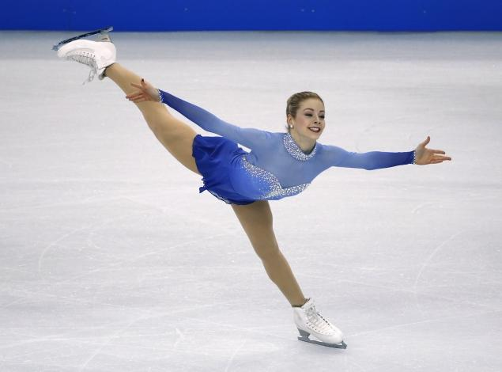

Ice skating is moving on ice by using ice skates. It can be done for a variety of reasons, including exercise, leisure, traveling, and various sports. Ice skating occurs both on specially prepared ice surfaces (arenas, tracks, parks), both indoors and outdoors, as well as on naturally occurring bodies of frozen water, such as ponds, lakes and rivers.
Skating became popular as a recreation, a means of transport and spectator sport in The Fens in England for people from all walks of life. Racing was the preserve of workers, most of them agricultural labourers. It is not known when the first skating matches were held, but by the early nineteenth century racing was well established and the results of matches were reported in the press. Skating as a sport developed on the lakes of Scotland and the canals of the Netherlands. In the 13th and 14th centuries wood was substituted for bone in skate blades, and in 1572 the first iron skates were manufactured.